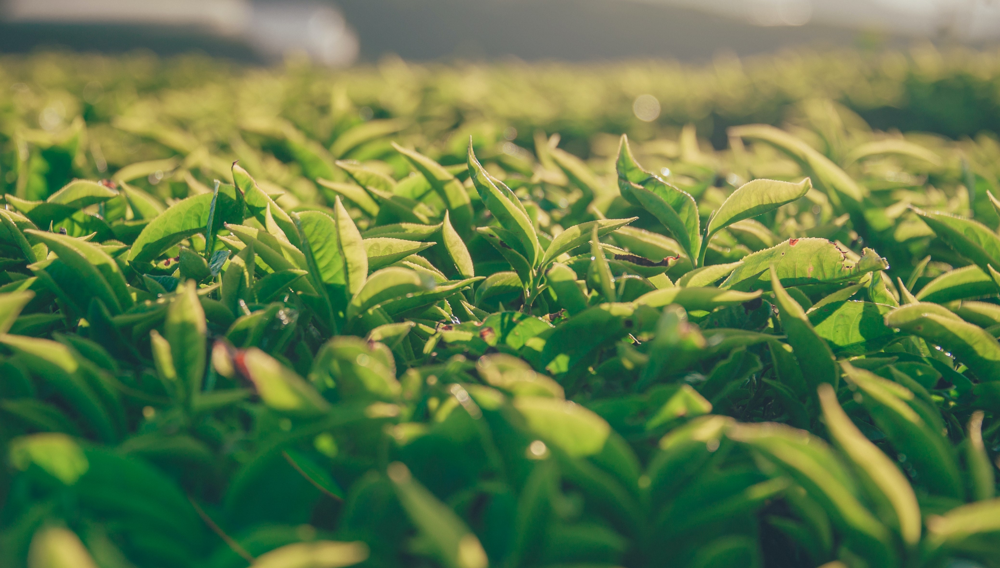
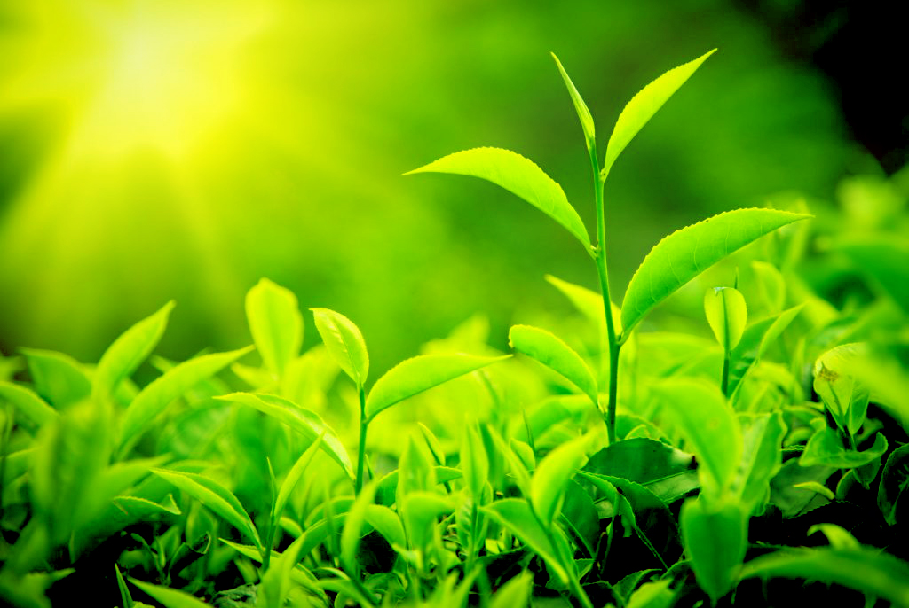

Tea garden kenyam, Ilam
Organic tea is the most popular beverage in the world after water with health wise and taste wise.Here is our famous local organic tea with many benifits. Ilaam ,Nepal
History of Tea in Nepal
The start of Nepal tea industry is marked by government backed Ilam Tea Estate established in 1863 in the district of Ilam by Colonel Gajaraj Singh Thapa, after seeing the growth of neighbouring Darjeeling tea industry. However, it is accepted to begin with tea bushes were really developed from seeds given as a gift by the Chinese Emperor to the then Prime Minister and de facto ruler of Nepal, Jung Bahadur Rana. Due to political turmoil and economic policies, the young industry failed to prosper in sharp contrast to neighbouring Darjeeling. After the period of turmoil, the government opened limitations for private investment. With the inflow of private capital the juvenile industry saw a period of renewed interest with formation of new plantation such as Bhudhakaran Tea Estate in Jhapa, the primary private tea domain in Terai region.
In 1966 the government established Nepal Tea Development Corporation to help with the development of the modern tea industry. After a slow period of development the primary production line was set up in Ilam exclusively for preparing of the tea leaves. Originally, Nepali tea takes off was being sold to production lines in Darjeeling, to meet their rising demands, being a profitable input for the production lines in and around Darjeeling. Few years afterward another preparing plant was open in Soktim, Jhapa. Slowly, the stagnant Nepal tea industry was evolving into a completely commercialised industry, benefitting the country’s financial and socio- financial advancement.Moreover, in 1982, His Majesty, then Lord of Nepal, Birendra Bir Bikram Shah Dev, announced five districts-Jhapa, Ilam, Panchthar, Dhankuta and Terhathum as the Tea Zones of Nepal. ... See more
"The Tea Garden Ilam"
Ilam, the tea garden of Nepal, is located about 700 km east of Kathmandu. It is famous for natural view and landscapes, tea production, and different agricultural economy. It is one of the major agricultural crop production areas of Nepal. Geographically it lies in the hill region which is mostly known as Mahabharata range. Most parts of Ilam are hilly regions with farmers as main inhabitants along with a few businessmen, officials and government employees.
Ilam Bazaar is found around 700 km east of Kathmandu. Normal buses are available from New Buspark, Koteshwar and Kalanki of Kathmandu which takes to Ilam after a transport ride of approximately 16hours. An airplane terminal is under development at Sukilumba Danda. Every day Bus/Bolero is accessible from Ilam to Taplejung, Phidim, Birtamod, Chandragadhi, Kakarbhitta, Siliguri (West Bengal), Pashupatinagar, Damak, Itahari, Dharan and Biratnagar. A unused buspark is being built at Sera. Besides these, Bus/Bolero moreover goes to all the VDCs of Ilam area.
Ilam is a municipality of Ilam District, which is in the hilly region of Mechi zone, in the Eastern Development Region of Nepal. Ilam also acts as the headquarters of Ilam District and Mechi zone. Geographically it lies in the hill region which is for the most part known as Mahabharata range. It is also one of the vital town in Mechi zone and one of the major place in Nepal for tea-production. It is celebrated for natural scenery and landscapes, tea production, and different agricultural economy. It is one of the major green crop production areas of Nepal. It is also known as “Tea Garden of Nepal”.... See more
Fresh leaf to collect

Collecting fresh leaf

Proccessing of drying leaf

Tea is ready from processing

Fresh tea ready with packet
.jpg)
Ready to Drink